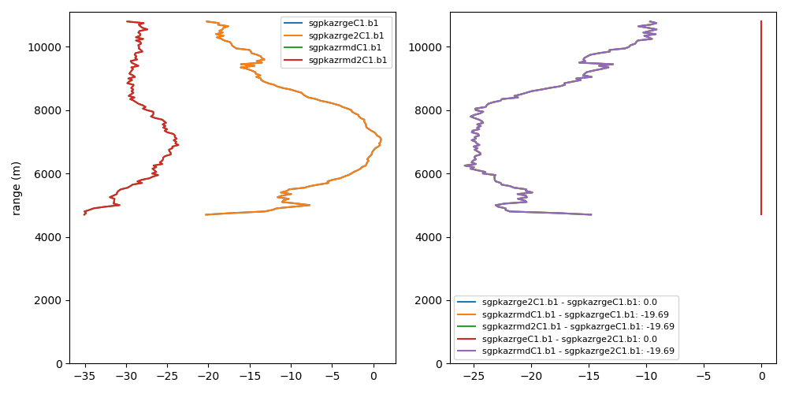

Note
Click here to download the full example code
Example on how to calculate and plot average profiles¶
This example shows how to calculate and plot average profiles from masked data
Out:
/anaconda3/lib/python3.7/site-packages/dask/array/numpy_compat.py:40: RuntimeWarning: invalid value encountered in true_divide
x = np.divide(x1, x2, out)
/anaconda3/lib/python3.7/site-packages/dask/array/numpy_compat.py:40: RuntimeWarning: invalid value encountered in true_divide
x = np.divide(x1, x2, out)
/anaconda3/lib/python3.7/site-packages/dask/array/numpy_compat.py:40: RuntimeWarning: invalid value encountered in true_divide
x = np.divide(x1, x2, out)
/Users/atheisen/Code/RadTraQ/examples/plot_mask_vpt.py:48: UserWarning: Matplotlib is currently using agg, which is a non-GUI backend, so cannot show the figure.
plt.show()
import radtraq
import act
import matplotlib.pyplot as plt
import numpy as np
# Read in Example KAZR File using ACT
f = radtraq.tests.sample_files.EXAMPLE_KAZR
obj = act.io.armfiles.read_netcdf(f)
# Resample to 1-minute to simplify processing
ge = obj.resample(time='1min').nearest()
# Process cloud mask in order to properly produce average VPT profiles through cloud
ge = radtraq.proc.cloud_mask.calc_cloud_mask(ge, 'reflectivity_copol', 'range')
# Variables to calculate average profiles
variable = ['reflectivity_copol', 'mean_doppler_velocity_copol', 'reflectivity_xpol']
# Create a grid to interpolate data onto - Needed for different radars
fh = 1500.
ygrid = np.arange(fh, 15000, 50)
# Calculate average profiles
ge = radtraq.proc.profile.calc_avg_profile(ge, variable=variable, first_height=fh, ygrid=ygrid)
# Showing how to do this for multiple radars
# Set up dictionary for profile comparison plotting
rad_dict = {'sgpkazrgeC1.b1': {'object': ge, 'variable': variable[0]},
'sgpkazrge2C1.b1': {'object': ge, 'variable': variable[0]},
'sgpkazrmdC1.b1': {'object': ge, 'variable': 'reflectivity_xpol'},
'sgpkazrmd2C1.b1': {'object': ge, 'variable': 'reflectivity_xpol'}
}
# Plot up profiles and perform comparisons from data in dictionary
display = radtraq.plotting.plot_avg_profile(rad_dict)
# Show plot
plt.show()
# Close out object
ge.close()
Total running time of the script: ( 0 minutes 5.216 seconds)